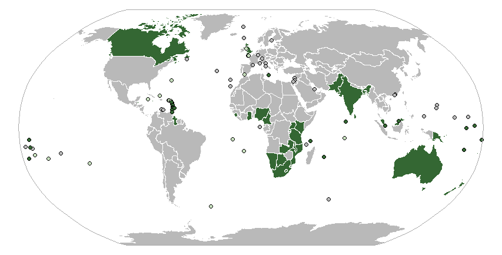

This vignette is an example of use of the database provided in the Github project Country Codes and International Organizations & Groups
by using the sf package in R.
Required R packages
library(sf)
library(jsonlite)
library(rnaturalearth)
library(dplyr)
Reading the data
The first step consists on reading the database provided (in this example the json file) and extracting one international organization. In this example we will plot the Commonwealth of Nations.
df <- fromJSON("https://raw.githubusercontent.com/dieghernan/Country-Codes-and-International-Organizations/master/outputs/Countrycodesfull.json")
# Identify Commonwealth acronym
orgsdb <- read.csv("https://raw.githubusercontent.com/dieghernan/Country-Codes-and-International-Organizations/master/outputs/CountrycodesOrgs.csv") %>%
distinct(org_id, org_name)
kable(orgsdb[grep("Common", orgsdb$org_name), ], format = "markdown")
| org_name | org_id | |
|---|---|---|
| 25 | Commonwealth | C |
| 26 | Central American Common Market | CACM |
| 30 | Caribbean Community and Common Market | CARICOM |
| 42 | Commonwealth of Independent States | CIS |
| 43 | Common Market for Eastern and Southern Africa | COMESA |
| 115 | Southern Cone Common Market | MERCOSUR |
In our case, the value to search is C. It is provided also a function that extract the membership from the json database:
ISO_memcol <- function(df,
orgtosearch) {
ind <- match(orgtosearch, unlist(df[1, "org_id"]))
or <- lapply(1:nrow(df), function(x) {
unlist(df[x, "org_member"])[ind]
})
or <- data.frame(matrix(unlist(or)), stringsAsFactors = F)
names(or) <- orgtosearch
df2 <- as.data.frame(cbind(df, or, stringsAsFactors = F))
return(df2)
}
df_org <- ISO_memcol(df, "C")
Now df_org has a new column, named C, containing the membership status of each country.
df_org %>%
count(C) %>%
kable(format = "markdown")
| C | n |
|---|---|
| member | 53 |
| NA | 222 |
df_org %>%
filter(!is.na(C)) %>%
select(
ISO_3166_3,
NAME.EN,
C
) %>%
head() %>%
kable(format = "markdown")
| ISO_3166_3 | NAME.EN | C |
|---|---|---|
| ATG | Antigua & Barbuda | member |
| AUS | Australia | member |
| BHS | Bahamas | member |
| BGD | Bangladesh | member |
| BRB | Barbados | member |
| BLZ | Belize | member |
Replacing the data on a map.
In this example the rnaturalearth package is used for retrieving an sf object. The code below replaces the data.frame part of the sfobject.
and replacing the dataframefor the dedicated database.
testmap <- ne_countries(50,
"countries",
returnclass = "sf"
) %>%
select(ISO_3166_3 = adm0_a3) %>%
full_join(df_org)
# We add also tiny countries
tiny <- ne_countries(50,
"tiny_countries",
returnclass = "sf"
) %>%
select(ISO_3166_3 = adm0_a3) %>%
full_join(df_org)
# Identify dependencies
ISOCommon <- df_org %>%
filter(!is.na(C)) %>%
select(
ISO_3166_3.sov = ISO_3166_3,
C_sov = C
)
tiny <- left_join(tiny, ISOCommon)
tiny$C <- coalesce(tiny$C, tiny$C_sov)
Plotting map: Wikipedia style
Now we would try to plot a map resembling the one presented in the Wikipedia page for the Commonwealth.

The map we will generate is presented under a Robinson projection and the color palette will be based in the Wikipedia convention for Orthographic Maps, since it is the one used in the example.
# Projecting the map
testmap_rob <- st_transform(testmap, "+proj=robin")
tiny_rob <- st_transform(tiny, "+proj=robin")
# Bounding box
bbox <- st_linestring(rbind(
c(-180, 90),
c(180, 90),
c(180, -90),
c(-180, -90),
c(-180, 90)
)) %>%
st_segmentize(5) %>%
st_cast("POLYGON") %>%
st_sfc(crs = 4326) %>%
st_transform(crs = "+proj=robin")
# Plotting
par(mar = c(0, 0, 0, 0), bg = NA)
plot(bbox,
col = "#FFFFFF",
border = "#AAAAAA",
lwd = 1.5
)
plot(
st_geometry(testmap_rob),
col = "#B9B9B9",
border = "#FFFFFF",
lwd = 0.1,
add = T
)
plot(
st_geometry(testmap_rob %>%
filter(!is.na(C))),
col = "#346733",
border = "#FFFFFF",
lwd = 0.1,
add = T
)
# By last, add tiny countries
# All
plot(
st_geometry(tiny_rob),
col = "#000000",
bg = "#B9B9B9",
add = T,
pch = 21
)
# Dependencies
plot(
st_geometry(tiny_rob %>%
filter(!is.na(C)) %>%
filter(!is.na(ISO_3166_3.sov))),
bg = "#C6DEBD",
col = "#000000",
pch = 21,
add = T
)
# Independent
plot(
st_geometry(tiny_rob %>%
filter(!is.na(C)) %>%
filter(is.na(ISO_3166_3.sov))),
bg = "#346733",
col = "#000000",
pch = 21,
add = T
)
plot(bbox,
col = NA,
border = "#AAAAAA",
lwd = 1.5,
add = T
)
